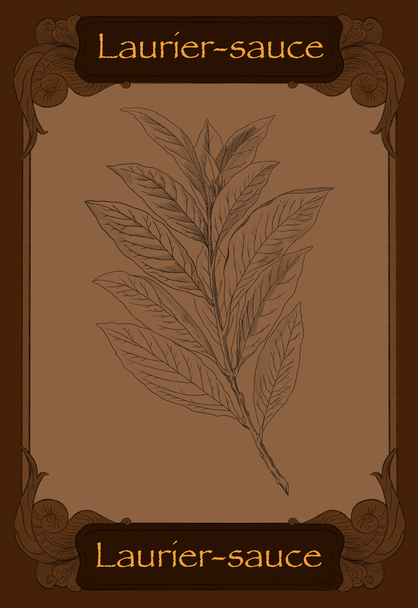

Laurier-sauce
Indice de localisation : On dit que je me plais à l’ombre des herbes d’acier, cherche derrière elles, tu sentiras peut-être mon parfum.

Indice de localisation : On dit que je me plais à l’ombre des herbes d’acier, cherche derrière elles, tu sentiras peut-être mon parfum.